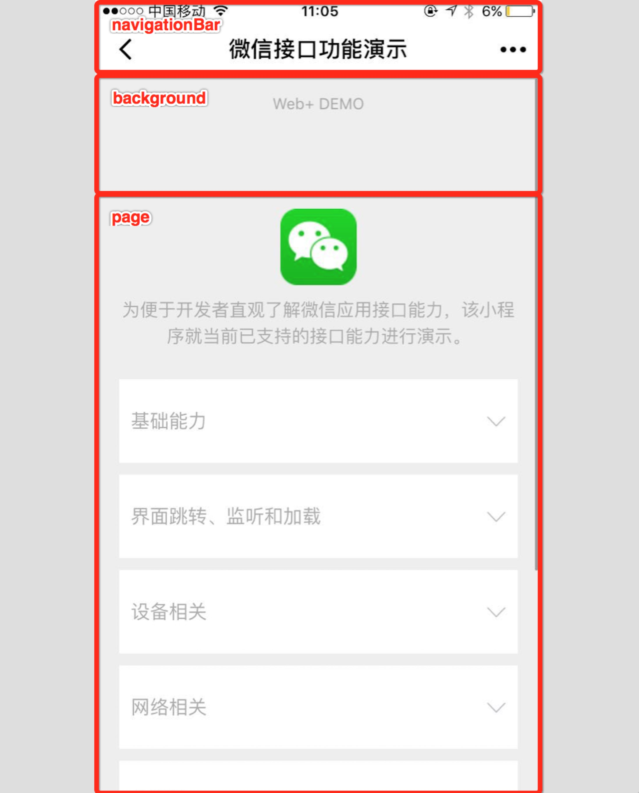
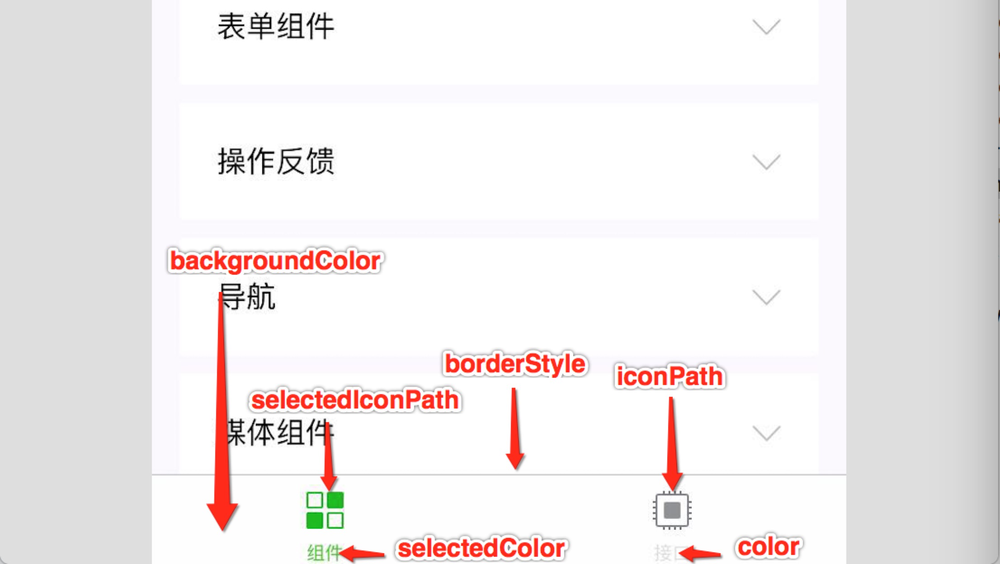

目录
小程序¶
目录结构¶
一个小程序主体部分由三个文件组成，必须放在项目的根目录，如下:
文件 必需 作用
app.js 是 小程序逻辑
app.json 是 小程序公共配置
app.wxss 否 小程序公共样式表
一个小程序页面由四个文件组成，分别是:
文件类型 必需 作用
js 是 页面逻辑
wxml 是 页面结构
json 否 页面配置
wxss 否 页面样式表
开发目录:
├── app.js
├── app.json
├── app.wxss
├── pages
│ │── index
│ │ ├── index.wxml
│ │ ├── index.js
│ │ ├── index.json
│ │ └── index.wxss
│ └── logs
│ ├── logs.wxml
│ └── logs.js
└── utils
小程序配置 1¶
全局配置¶
小程序根目录下的 app.json 文件用来对微信小程序进行全局配置，决定页面文件的路径、窗口表现、设置网络超时时间、设置多 tab 等。
以下是一个包含了部分常用配置选项的 app.json:
{
"pages": [
"pages/index/index",
"pages/logs/index"
],
"window": {
"navigationBarTitleText": "Demo"
},
"tabBar": {
"list": [{
"pagePath": "pages/index/index",
"text": "首页"
}, {
"pagePath": "pages/logs/index",
"text": "日志"
}]
},
"networkTimeout": {
"request": 10000,
"downloadFile": 10000
},
"debug": true,
"navigateToMiniProgramAppIdList": [
"wxe5f52902cf4de896"
]
}
pages:
用于指定小程序由哪些页面组成，每一项都对应一个页面的 路径（含文件名） 信息
// 数组的第一项代表小程序的初始页面（首页）。小程序中新增/减少页面，都需要对 pages 数组进行修改
"pages": [
"pages/index/index",
"pages/logs/index",
"pages/new/index"
]
window:
用于设置小程序的状态栏、导航条、标题、窗口背景色。
{
"window": {
"navigationBarBackgroundColor": "#ffffff",
"navigationBarTextStyle": "black",
"navigationBarTitleText": "微信接口功能演示",
"backgroundColor": "#eeeeee",
"backgroundTextStyle": "light"
}
}

tabBar:
如果小程序是一个多 tab 应用（客户端窗口的底部或顶部有 tab 栏可以切换页面），
可以通过 tabBar 配置项指定 tab 栏的表现，以及 tab 切换时显示的对应页面
其中 list 接受一个数组，只能配置最少 2 个、最多 5 个 tab
页面配置¶
页面中配置项会覆盖 app.json 的 window 中相同的配置项:
{
"navigationBarBackgroundColor": "#ffffff",
"navigationBarTextStyle": "black",
"navigationBarTitleText": "微信接口功能演示",
"backgroundColor": "#eeeeee",
"backgroundTextStyle": "light"
}
